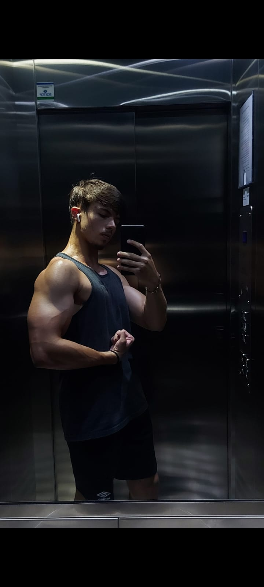
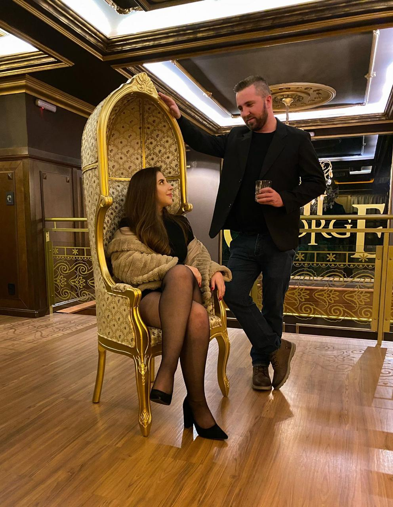

Quem Somos
Bem-vindo à LOS PEDRO'S CUSTOMS, o destino definitivo para entusiastas automotivos que buscam transformar seus veículos em obras-primas únicas. Somos uma empresa apaixonada por carros, dedicada a oferecer serviços de alta qualidade e soluções personalizadas para atender às necessidades e desejos de nossos clientes.
Nossa Missão
Nossa missão é transformar a sua visão em realidade, proporcionando experiências de condução excepcionais e veículos que refletem a personalidade e o estilo de cada proprietário.
Combinamos expertise técnica, criatividade e as mais recentes tecnologias para oferecer resultados impressionantes e duradouros.
O Que Fazemos
Oferecemos uma gama completa de serviços para personalização e modificação de carros, incluindo:
Modificações de Carros: Desde alterações estéticas até aprimoramentos de desempenho, nossas modificações são projetadas para elevar seu veículo a um novo patamar.
Serviços Personalizados de Carros: Entendemos que cada carro é único, assim como seu dono. Criamos soluções sob medida para atender às suas especificações e preferências.
Plotagem de Carros: Transforme a aparência do seu veículo com nossa vasta seleção de adesivos e envoltórios de alta qualidade.
Preparações de Carros: Seja para corridas, shows automotivos ou uso diário, preparamos seu carro para alcançar o desempenho máximo.
Interiores de Carros: Redefina o luxo e o conforto do interior do seu veículo com nossos serviços de estofamento, personalização de painéis e muito mais.
Acessórios e Tecnologias de Carros: Equipamos seu carro com os mais modernos acessórios e tecnologias para melhorar sua funcionalidade e estilo.
Nossa Equipe
Nossa equipe é composta por profissionais altamente qualificados e apaixonados por carros. Com anos de experiência e um profundo conhecimento técnico, estamos prontos para enfrentar qualquer desafio e entregar resultados que superem suas expectativas.
Compromisso com a Qualidade
Na [Nome da Empresa], a qualidade está no centro de tudo o que fazemos. Utilizamos apenas materiais de primeira linha e seguimos rigorosos padrões de controle de qualidade para garantir que cada projeto seja concluído com perfeição.
Entre em Contato
Estamos ansiosos para ajudar você a transformar seu carro dos sonhos em realidade. Visite-nos ou entre em contato para saber mais sobre nossos serviços e como podemos personalizar seu veículo para refletir seu estilo único.
O Dono da Coisa

Nome: Pedro
Idade: 17
Função: Herdeiro Supremo
Sobre: Pedro é o jovem herdeiro que assume a liderança com a mesma confiança com que escolhe o café da manhã.
Com 19 anos e um talento inato para misturar arrogância com desinformação, ele frequentemente confunde um Renegade com um verdadeiro veículo off-road.
Ele pode não saber a diferença entre uma suspensão independente e um par de suspensórios,
mas uma coisa é certa: o dinheiro do pai está sendo investido na oficina com entusiasmo. Pedro é o tipo de chefe que sempre tem uma opinião sobre tudo,
mesmo que essa opinião não seja exatamente baseada na realidade.
Se você precisar de alguém para decorar o escritório com um toque de luxo ou oferecer uma teoria surpreendente sobre o desempenho dos veículos,
Pedro é o cara!
Chefe Engenheiro dos Pistões
Nome: Leonardo
Idade: 22
Função: Chefe dos Pistões
Leonardo é o verdadeiro guru dos motores e o mestre dos buracos e escapes.
Com uma origem tão surpreendente quanto sua habilidade técnica,
ele nasceu em um bueiro e desde então tem dominado a arte de lidar com tudo que é buraco.
Se há uma peça que precisa ser ajustada ou um problema que ninguém consegue resolver, Leonardo é a solução.
Seu conhecimento sobre o funcionamento interno dos motores é tão profundo quanto a sua experiência com buracos e falhas inesperadas.
Com Leonardo na equipe, nenhum escape será muito desafiador e nenhum problema será grande demais.
Ele combina engenho com uma dose saudável de criatividade para garantir que cada pistão funcione perfeitamente, independentemente das condições!
Mister Faísca

Nome: Leandro
Idade: 18
Função: Chefe das velas
Leandro, ou Mister Faísca, é o autoproclamado guru internacional das velas,
embora sua experiência prática pareça limitar-se a não saber nem abrir o capô do carro.
Aos 18 anos, ele se destaca mais pelos músculos que exibe na academia e pelas habilidades impressionantes
em dormir durante o expediente do que pelo seu conhecimento real sobre ignição. Enquanto se gaba de ser uma referência global em velas,
suas contribuições práticas muitas vezes se restringem a dar dicas sobre treinos e escolher o melhor travesseiro para suas sonecas.
Se você estiver em busca de alguém para adicionar um toque de glamour ao cargo de Chefe das Velas,
e não se importar com uma dose extra de descanso ao longo do dia,
Leandro é o cara certo para manter a equipe tanto inspirada quanto sonolenta.
Lider da Palpitaria

Nome: Fabio
Idade: entre 30 e 200
Função: Palpiteiro Senior
Fabio, o enigmático Líder da Palpitaria Senior, é o mestre dos palpites e o maior especialista em se intrometer onde não é chamado.
Com uma faixa etária que varia entre 30 e 200 anos, Fabio tem a habilidade única de não saber trocar um pneu,
mas tem um talento incomparável para dar palpites sobre tudo o que acontece na oficina. Seu lema é "não faço, mas opino",
e ele se orgulha de oferecer conselhos não solicitados sobre desde o aperto do parafuso até a estratégia de trabalho.
Se há uma tarefa sendo realizada, você pode ter certeza de que Fabio estará por perto, pronto para oferecer uma opinião contundente,
embora frequentemente não tenha a menor ideia do que está falando.
Ele é o primeiro a dizer “Eu já sabia” quando as coisas vão bem e o último a admitir que talvez sua intervenção não tenha ajudado em nada.
Se você precisa de um especialista em palpites ou alguém para adicionar um toque de drama ao ambiente de trabalho,
Fabio é a presença que garante que ninguém fique sem uma boa dose de opinião não pedida.